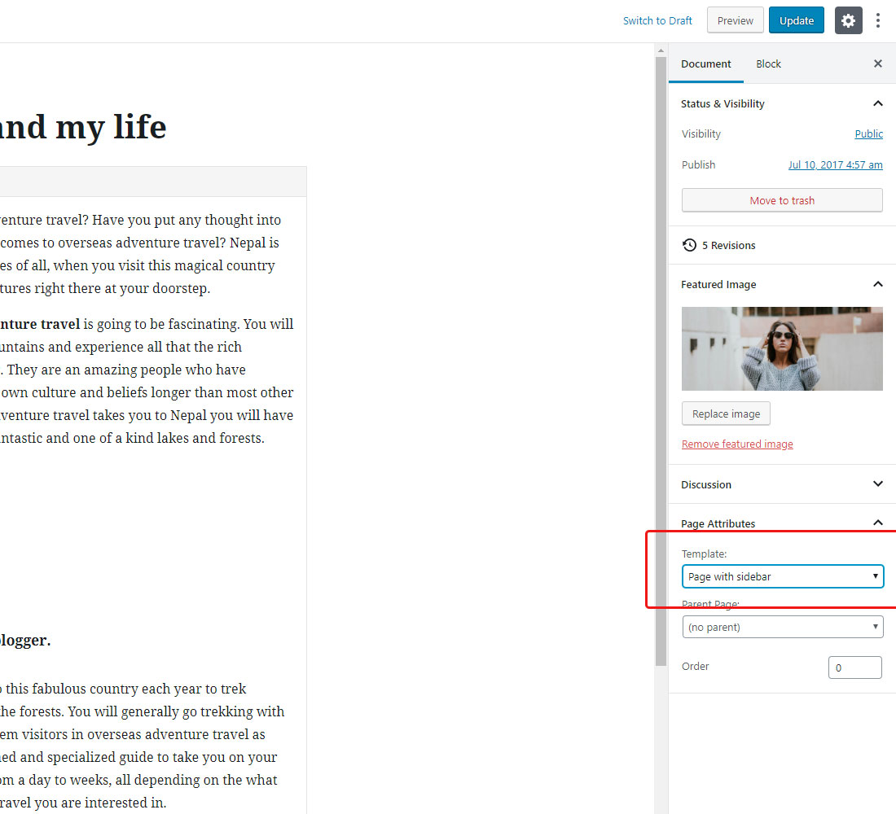

Inka WordPress Documentation
Thank you for purchasing our template. If you have any questions regarding our product feel free to visit our support forum
Getting Started
Unzip files from archive and you will following folders and files.
- /demo-import - folder with data import files
- inka-child.zip - archive with child theme
- inka-theme.zip - archive with installable WordPress theme
Recommended Plugins
After theme installation you'll see the note with recommended plugins that you should install if you want to get full functionality of a theme. Install One Click Demo Import plugin to get the same look as demo
Demo Import
Go to Appearance -> Import Demo Data. Click Import Demo Data Button and wait until the process is finished. For the manual import Demo files located in demo-import folder
Child Theme
We recommend you to use child theme. You can customize it how you want, add css styles, functions etc. This way, when you get theme update, all your changes will be in place in child theme. Simply install and activate it after main theme.
Image Sizes
Recommended size for post images is 814x571 pixels. For About Me widget - 281x215 pixels
Theme Menu
Go to Appearance -> Menus. Make sure that Main Menu is set to Primary Menu
Featured Slider
All the settings for featured slider available in theme customizer. You can: turn on/off the featured slider, choose the category or choose specific posts, using posts ID. Post ID can be found in the URL when you editing the post. Example - http://demo.deothemes.com/inka/wp-admin/post.php?post=93&action=edit. The ID of this post is 93
Logo upload
You can upload your logo using customizer. Retina logo should be twise bigger size.
Changing Color
You can change main color using customizer. For text and heading colors go to Customizer -> Typography.

Layout
Go to Customizer -> Layout -> Blog. Here you can choose layout that will effect pages with posts.
Page Layout
Edit your page, in the left sidebar choose Template: Page with sidebar
Typography
Customize theme typography using customizer
Preloader
To turn off theme preloader go to Customizer -> Preloader.
Social Profiles
Add you social profiles links or completely remove links from inputs if you don't want to use any social profiles.

Navigation
Make navbar sticky using customizer.
Footer
Choose how many widgets you need to show in footer. Disable back to top arrow. Edit copyright text.
Contact Form
First, make sure that you have installed Contact Form 7 plugin. After this go to Contact -> Contact Forms and select Contact form 1. If you didn't use demo import, here is the code for the form
<div class="contact-name">
<label for="name">Name:</label>
[text* your-name]
</div>
<div class="contact-email">
<label for="email">Email:</label>
[email* your-email]
</div>
<div class="contact-subject">
<label>Subject:</label>
[text your-subject]
</div>
<div class="contact-message">
<label>Message:</label>
[textarea* your-message x9]
</div>
[submit class:btn class:btn-lg class:btn-color class:btn-button "Send Message"]
Edit Contact form settings
Mailchimp newsletter
First, make sure that you have installed MailChimp for WordPress plugin. After this go to MailChimp for WP and enter your API key from MailChimp, click on the Get Your API key link if you need to create new API key.
Instagram Widget
First, make sure that you have installed WP Instagram Widget plugin. After this go to Appearance -> Widgets -> Instagram and enter your Instagram username. Change number of photos if needed.
Theme Update
There are 2 options of how to update your theme.
Option 1 (automatic):
Install recommended Envato Market plugin. Generate an Envato API Personal Token, paste the token and save changes. When the theme has new update, you will see the notification and can update it on the fly. Read more about how this process works at envato.com

Option 2 (manual):
Activate other WordPress theme (ex.: Twenty Seventeen). Delete Inka theme. Upload new version of a theme.
Here is the short video of how to do it.
Credits
Support
If you have any question feel free to visit our Support Forum